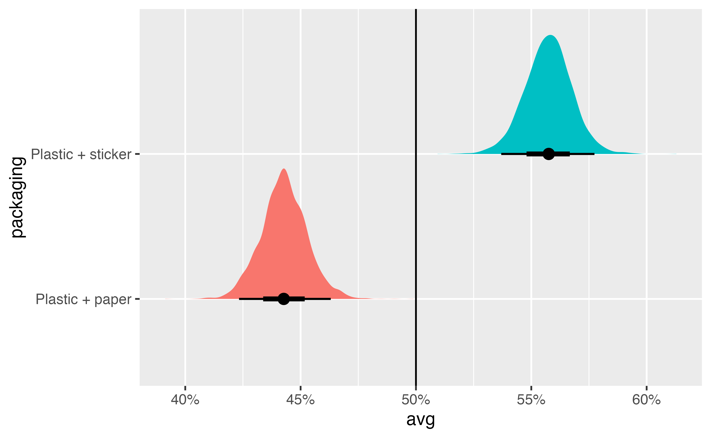
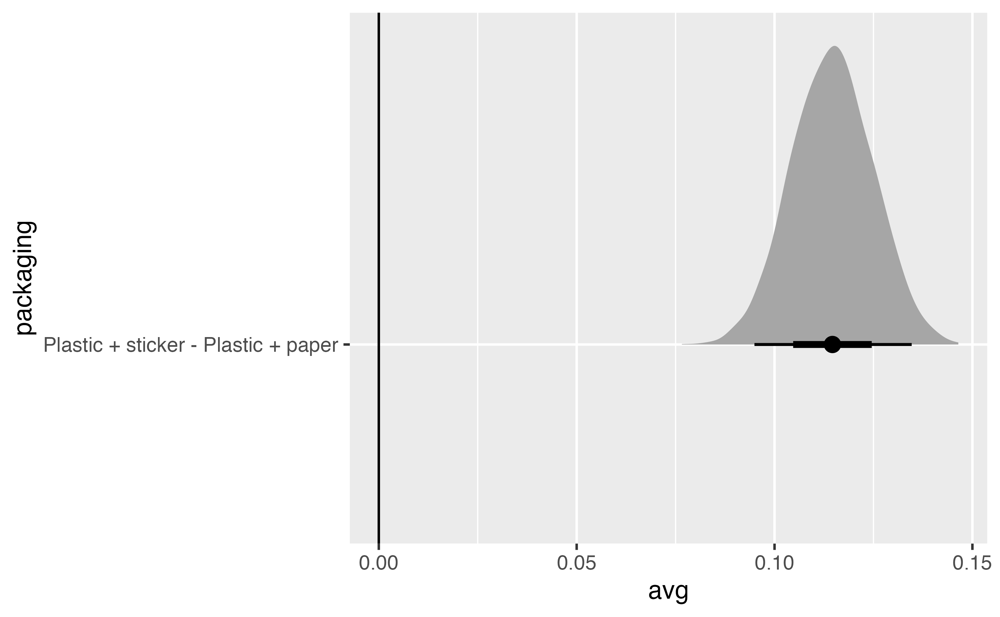

library(tidyverse)
library(brms)
library(rstan)
library(tidybayes)
library(ggdist)
library(marginaleffects)
library(parameters)
library(tinytable)
library(scales)
library(ggforce)
stickers <- readRDS("data/processed_data/study_5_sticker.rds")9 MMs and AMCEs with Bayesian multinomial logistic regression
blah blah
stickers_choice_alt <- stickers |>
mutate(choice_alt = factor(alt * choice))
stickers_choice_alt |>
select(resp_id, question, price, packaging, flavor, choice, choice_alt)# A tibble: 7,080 × 7
resp_id question price packaging flavor choice choice_alt
<dbl> <dbl> <fct> <fct> <fct> <dbl> <fct>
1 4 1 $3 Plastic + sticker Chocolate 1 1
2 4 1 $2 Plastic + paper Nuts 0 0
3 4 2 $3 Plastic + sticker Nuts 0 0
4 4 2 $2 Plastic + paper Chocolate 1 2
5 4 3 $4 Plastic + paper Chocolate 1 1
6 4 3 $2 Plastic + sticker Chocolate 0 0
7 4 4 $2 Plastic + sticker Chocolate 1 1
8 4 4 $4 Plastic + paper Nuts 0 0
9 4 5 $4 Plastic + sticker Chocolate 1 1
10 4 5 $2 Plastic + paper Nuts 0 0
# ℹ 7,070 more rows\[ \begin{aligned} &\ \textbf{Multinomial probability of selection of choice}_i \textbf{ in respondent}_j \\ \text{Choice}_{i_j} \sim&\ \operatorname{Categorical}(\{\mu_{1,i_j}, \mu_{2,i_j}\}) \\[10pt] &\ \textbf{Model for probability of each option} \\ \{\mu_{1,i_j}, \mu_{2,i_j}, \mu_{3,i_j}\} =&\ \beta_{0_j} + \beta_{1_j} \text{Price[\$3]}_{i_j} + \beta_{2_j} \text{Price[\$4]}_{i_j} + \\ &\ \beta_{3_j} \text{Packaging[Plastic + sticker]}_{i_j} + \beta_{4_j} \text{Flavor[Nuts]}_{i_j} \\[20pt] &\ \textbf{Respondent-specific slopes} \\ \left( \begin{array}{c} \begin{aligned} &\beta_{0_j} \\ &\beta_{1_j} \\ &\beta_{2_j} \\ &\beta_{3_j} \\ &\beta_{4_j} \end{aligned} \end{array} \right) \sim&\ \operatorname{Multivariate}\ \mathcal{N} \left[ \left( \begin{array}{c} \begin{aligned} &\gamma^{\beta_{0}}_{0} \\ &\gamma^{\beta_{1}}_{0} \\ &\gamma^{\beta_{2}}_{0} \\ &\gamma^{\beta_{3}}_{0} \\ &\gamma^{\beta_{4}}_{0} \end{aligned} \end{array} \right) , \left( \begin{array}{ccccc} \sigma^2_{\beta_{0j}} & \rho_{\beta_{0j}\beta_{1j}} & \rho_{\beta_{0j}\beta_{2j}} & \rho_{\beta_{0j}\beta_{3j}} & \rho_{\beta_{0j}\beta_{4j}} \\ \dots & \sigma^2_{\beta_{1j}} & \rho_{\beta_{1j}\beta_{2j}} & \rho_{\beta_{1j}\beta_{3j}} & \rho_{\beta_{1j}\beta_{4j}} \\ \dots & \dots & \sigma^2_{\beta_{2j}} & \rho_{\beta_{2j}\beta_{3j}} & \rho_{\beta_{2j}\beta_{4j}} \\ \dots & \dots & \dots & \sigma^2_{\beta_{3j}} & \rho_{\beta_{3j}\beta_{4j}} \\ \dots & \dots & \dots & \dots & \sigma^2_{\beta_{4j}} \end{array} \right) \right] \\[10pt] &\ \textbf{Priors} \\ \beta_{0 \dots 4} \sim&\ \mathcal{N} (0, 3) \qquad\qquad\ [\text{Prior for choice-level coefficients}] \\ \gamma^{\beta_{0 \dots 4}}_0 \sim&\ \mathcal{N} (0, 3) \qquad\qquad\ [\text{Prior for individual-level coefficients}] \\ \sigma_{\beta_{0 \dots 4}} \sim&\ \operatorname{Exponential}(1) \qquad [\text{Prior for between-respondent intercept and slope variability}] \\ \rho \sim&\ \operatorname{LKJ}(1) \qquad\qquad [\text{Prior for correlation between random slopes and intercepts}] \end{aligned} \]
model_stickers_categorical_brms <- brm(
bf(choice_alt ~ 0 + price + packaging + flavor + (1 | ID | resp_id)),
data = stickers_choice_alt,
family = categorical(refcat = "0"),
prior = c(
prior(normal(0, 3), class = b, dpar = mu1),
prior(normal(0, 3), class = b, dpar = mu2),
prior(exponential(1), class = sd, dpar = mu1),
prior(exponential(1), class = sd, dpar = mu2)
),
chains = 4, cores = 4, iter = 2000, seed = 1234,
backend = "cmdstanr", threads = threading(2),
file = "models/model_stickers_categorical_brms"
)model_parameters(model_stickers_categorical_brms)Parameter | Median | 95% CI | pd | Rhat | ESS
---------------------------------------------------------------------------------
mu1_price$2 | 0.75 | [ 0.60, 0.89] | 100% | 1.000 | 2211.00
mu1_price$3 | 0.02 | [-0.12, 0.15] | 58.53% | 1.000 | 2456.00
mu1_price$4 | -0.86 | [-1.00, -0.73] | 100% | 1.001 | 2896.00
mu1_packagingPlasticPsticker | 0.64 | [ 0.52, 0.77] | 100% | 1.001 | 2852.00
mu1_flavorNuts | -1.93 | [-2.07, -1.80] | 100% | 1.000 | 2789.00
mu2_price$2 | 0.80 | [ 0.66, 0.94] | 100% | 1.000 | 2767.00
mu2_price$3 | 0.04 | [-0.10, 0.18] | 71.67% | 0.999 | 3099.00
mu2_price$4 | -0.90 | [-1.04, -0.76] | 100% | 1.000 | 3147.00
mu2_packagingPlasticPsticker | 0.57 | [ 0.45, 0.69] | 100% | 1.000 | 3132.00
mu2_flavorNuts | -1.96 | [-2.09, -1.82] | 100% | 0.999 | 2917.00
Uncertainty intervals (equal-tailed) computed using a MCMC distribution approximation.
The model has a log- or logit-link. Consider using `exponentiate = TRUE` to interpret coefficients as ratios.stickers_cat_marginalized <- model_stickers_categorical_brms |>
gather_draws(`^b_.*$`, regex = TRUE) |>
# Each variable name has "mu1", "mu2", etc. built in, like "b_mu1_seat6". This
# splits the .variable column into two parts based on a regular expression,
# creating one column for the mu part ("b_mu1_") and one for the rest of the
# variable name ("seat6")
separate_wider_regex(
.variable,
patterns = c(mu = "b_mu\\d_", .variable = ".*")
) |>
# Find the average of the three mu estimates for each variable within each
# draw, or marginalize across the three options, since they're randomized
group_by(.variable, .draw) |>
summarize(.value = mean(.value)) `summarise()` has grouped output by '.variable'. You can override using the `.groups` argument.stickers_cat_marginalized |>
group_by(.variable) |>
median_qi()# A tibble: 5 × 7
.variable .value .lower .upper .width .point .interval
<chr> <dbl> <dbl> <dbl> <dbl> <chr> <chr>
1 flavorNuts -1.94 -2.06 -1.83 0.95 median qi
2 packagingPlasticPsticker 0.606 0.500 0.712 0.95 median qi
3 price$2 0.773 0.642 0.904 0.95 median qi
4 price$3 0.0273 -0.0893 0.144 0.95 median qi
5 price$4 -0.880 -0.995 -0.764 0.95 median qi newdata_all_combos <- stickers |>
tidyr::expand(price, packaging, flavor) |>
mutate(resp_id = 4)
all_preds_brms <- model_stickers_categorical_brms |>
epred_draws(newdata = newdata_all_combos) |>
filter(.category == 0) |>
mutate(.epred = 1 - .epred)all_preds_brms |>
group_by(price, packaging, flavor) |>
median_qi(.epred)# A tibble: 12 × 9
price packaging flavor .epred .lower .upper .width .point .interval
<fct> <fct> <fct> <dbl> <dbl> <dbl> <dbl> <chr> <chr>
1 $2 Plastic + paper Chocolate 0.813 0.789 0.834 0.95 median qi
2 $2 Plastic + paper Nuts 0.382 0.352 0.415 0.95 median qi
3 $2 Plastic + sticker Chocolate 0.888 0.871 0.903 0.95 median qi
4 $2 Plastic + sticker Nuts 0.532 0.498 0.565 0.95 median qi
5 $3 Plastic + paper Chocolate 0.673 0.643 0.703 0.95 median qi
6 $3 Plastic + paper Nuts 0.227 0.204 0.254 0.95 median qi
7 $3 Plastic + sticker Chocolate 0.790 0.766 0.813 0.95 median qi
8 $3 Plastic + sticker Nuts 0.351 0.318 0.383 0.95 median qi
9 $4 Plastic + paper Chocolate 0.454 0.421 0.489 0.95 median qi
10 $4 Plastic + paper Nuts 0.106 0.0925 0.122 0.95 median qi
11 $4 Plastic + sticker Chocolate 0.604 0.570 0.638 0.95 median qi
12 $4 Plastic + sticker Nuts 0.179 0.158 0.202 0.95 median qi preds_packaging_marginalized <- all_preds_brms |>
# Marginalize out the other covariates
group_by(packaging, .draw) |>
summarize(avg = mean(.epred))`summarise()` has grouped output by 'packaging'. You can override using the `.groups` argument.preds_packaging_marginalized |>
group_by(packaging) |>
median_qi()# A tibble: 2 × 7
packaging avg .lower .upper .width .point .interval
<fct> <dbl> <dbl> <dbl> <dbl> <chr> <chr>
1 Plastic + paper 0.443 0.423 0.463 0.95 median qi
2 Plastic + sticker 0.558 0.537 0.577 0.95 median qi preds_packaging_marginalized |>
ggplot(aes(x = avg, y = packaging, fill = packaging)) +
stat_halfeye() +
geom_vline(xintercept = 0.5) +
scale_x_continuous(labels = label_percent()) +
guides(fill = "none")
preds_packaging_marginalized |>
compare_levels(variable = avg, by = packaging, comparison = "control") |>
median_qi(avg)# A tibble: 1 × 7
packaging avg .lower .upper .width .point .interval
<chr> <dbl> <dbl> <dbl> <dbl> <chr> <chr>
1 Plastic + sticker - Plastic + paper 0.115 0.0949 0.135 0.95 median qi preds_packaging_marginalized |>
compare_levels(variable = avg, by = packaging, comparison = "control") |>
ggplot(aes(x = avg, y = packaging)) +
stat_halfeye() +
geom_vline(xintercept = 0)